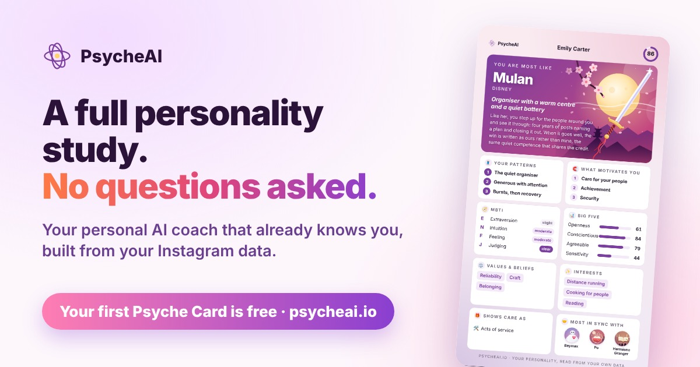

A friend compatibility test built on how you both actually behave
Quizzes compare two sets of answers. Psyche Sync compares two friends as their own data shows them: their rhythms, values, how they show care, how they keep in touch and how they disagree. Send a friend your Psyche Card link and see how in sync you are.
How it works
- Each of you gets a Psyche Card from your own Instagram data. The first one is free.
- One of you sends the other their personal link (it is also a QR code on your card).
- Once their card is ready, one tap shows your Psyche Sync. It is free, and you can choose to share the result with them.
What Psyche Sync tells you
- The one line that sums up the two of you.
- Where you align: what you have in common and what suits each other, each with the evidence behind it.
- Where you differ, and how each difference can work for you, never as a fault in either of you.
- How to relate better: things each of you could do, addressed to each person, and things to do together.
It is for friends, family or anyone close, never romance. Download it as a PDF, or share the result as an image.
Why not just compare MBTI types?
Two people with the same four letters can be great friends or drive each other mad. What decides it is the detail: whether your energy and appetite for contact match, whether your conscientiousness is far apart (one of the most reliable sources of friction there is), whether you both argue or one always gives way, whether your rhythms can share a weekend. Psyche Sync reads those things directly, from behaviour.
What makes two people sync
Two people get on most easily when their energy and appetite for contact match, when they enjoy at least some of the same things, and when they handle a disagreement in ways the other can live with. Differences are not a problem in themselves: a planner and someone who decides on the day can balance each other well once they know it. Psyche Sync names both, with what each of you can do about the differences.

It works the same for a best friend, a sibling or a parent. Curious which character your friend will get? See the characters.
Questions
Is Psyche Sync free?
Yes. Syncing two Psyche Cards is free; each person needs their own card, and the first card is free too.
Does my friend see my data?
No. A Psyche Card’s link carries only the card’s short summary, never your data export, messages or report.
Do I see my friend’s result?
Yes, when they sync with your personal link: if they choose to share it, the result and their Psyche Card arrive in your Sync list. Their device locks it with your link’s key, so PsycheAI cannot read it.
Is it a score or a prediction?
Neither. There is no percentage and no verdict: it is a reading of how two people are likely to get on, with its evidence, to start a conversation, not to decide one for you.
Your first Psyche Card is free
No questionnaire, no account. About a minute once your data is ready.